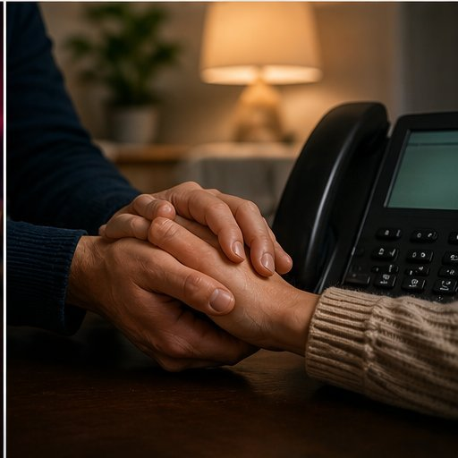

Help for Victim-Survivors.
Three things can help keep you safe: modern online skills, small changes to your daily habits, and knowing where to go for more help.

§ A 21st-Century Skills to Spot and Stop Swatters
Shapiro (2023c) explains that to stay safe online today, people need a set of modern skills. Each one makes it harder for a swatter to find you or trick you.
Skill 1: Keep Personal Information Private
- Know what parts of your life should stay private — your home address, phone number, daily routine, and workplace (Shapiro, 2023c).
- Understand that once you post something online, it can be copied, shared, and saved forever.
- Think before you post: would I want a stranger knowing this?
Skill 2: Tell Real from Fake Online
- Learn to spot fake emails (phishing), fake phone calls (vishing), and fake texts (smishing) — these are the top tricks swatters use to steal your info (Shapiro, 2023b).
- Never click on links or open files from people you don't know (Shapiro, 2023b).
- If something feels "off" — urgent requests, strange grammar, weird links — it probably is.
Skill 3: Use Strong Online Security
- Use two-step verification on every account — this blocks most takeover attempts (Shapiro, 2023c).
- Use long, one-of-a-kind passwords; never use the same password on two sites.
- Keep your computer's anti-virus software up to date (Shapiro, 2023c).
- Back up your important files often.
Skill 4: Learn How Online Offenders Work
- Read about how swatters, doxers, and scammers operate — that is what this site is for (Shapiro, 2023c).
- When you know the tricks, they stop working on you.
Skill 5: Know When to Ask for Help
- If someone is threatening you online, tell a trusted adult, friend, or the police (Shapiro, 2023c).
- You don't have to handle it alone.
§ B Safety Advice Using Routine Activity Theory
Shapiro (2023c) uses Routine Activity Theory to explain how crime happens. The theory says a crime needs three things at the same time:
- A motivated offender (a swatter who wants to attack someone).
- A suitable target (a person who is easy to find and hurt).
- An absence of protection (nothing stopping the attack).
You cannot control whether swatters exist. But you can change how easy a target you are, and you can build up your protection. Reyns, Henson, and Fisher (2011) tested this idea on 974 college students and found four big risk factors. The tips below fix each one.
Make Yourself Less Easy to Find (Less "Exposure")
- Limit what you post — your location, your job, and anything that could be used to answer a security question (Shapiro, 2023b).
- Set all your social media, computers, and home Wi-Fi to "private."
- Turn off location tracking and GPS on your phone when you're not using them.
- Remove third-party apps that pull info from your social media profiles.
- For gamers: hide your IP address with a VPN, keep game settings private, and don't share personal details while streaming (Shapiro, 2023b).
Block Strangers from Reaching You (Less "Access")
- Don't accept friend requests from strangers — this doubles your chance of being harassed (Reyns et al., 2011).
- Stay away from friends who act badly online — their behavior puts you at risk too (Reyns et al., 2011).
- Never share your IP address, real name, or home location on Discord, Skype, TeamSpeak, or Mumble (Shapiro, 2023b).
Remove Your Info From Data Broker Sites
- Ask data broker sites (like Spokeo, Intelius, and Acxiom) to take down your information — most have an opt-out form (Shapiro, 2023d).
- Check your credit records with Equifax, Experian, and TransUnion; fix any errors (Shapiro, 2023b).
- File a complaint with the FTC if a company mishandles your data.
- Ask your county to keep your property records out of online searches, where state law allows (Shapiro, 2023b).
Build Up Your Protection
- Use two-step verification on every account.
- Use long, unique passwords; change them often; never reuse them.
- Don't click links or open files from senders you don't know (Shapiro, 2023b).
- Never give personal info over the phone unless you made the call.
- Search your own name online once in a while to see what info is public.
Know the Tricks Offenders Use
- Fake caller ID — a call may look like it came from your own number (Shapiro, 2023d).
- Fake emails, calls, and texts — all built to steal your passwords (Shapiro, 2023b).
- Chat app spying — people can grab your IP address on Discord or Skype.
- Hidden info in photos — photos can carry your location; remove it before posting.
- Security question guesses — don't use answers a stranger could find on your profile.
If You Think You Are Being Targeted
- Save everything. Keep screenshots of threats and write down dates and platforms (Shapiro, 2023b).
- Tell your local police in advance. Seattle and some other cities let people at risk register their address, so police know a fake call could come (Shapiro, 2023b).
- Ask the website hosting your leaked info to take it down.
- Report suspicious emails to your internet provider.
§ C Websites and Strategies to Learn More and Get Help
Shapiro (2023b) recommends these free, trusted resources for both current victims and people who want to learn more.
Government Resources
- Federal Trade Commission (FTC) — help with identity theft and protecting personal information. ftc.gov
- FBI Internet Crime Complaint Center (IC3) — report online crimes and read about current scams. ic3.gov
- FBI Public Service Announcement (I-042115-PSA) — explains doxing and swatting and how to defend against them (Shapiro, 2023b).
- Cybersecurity and Infrastructure Security Agency (CISA) — guides on phishing and online scams (ST04-014; ST06-003). cisa.gov
- Department of Homeland Security (DHS) — how to protect yourself from doxing. dhs.gov
- National Emergency Number Association (NENA) — trains 911 operators to spot fake calls (Shapiro, 2023b). nena.org
- StopBullying.gov — federal resource on cyberbullying, harassment, and online safety. stopbullying.gov
Mental Health Support
- 988 Suicide & Crisis Lifeline — call or text 988 for free, confidential support anytime.
- Crisis Text Line — text HOME to 741741.
- SAMHSA National Helpline — 1-800-662-HELP (4357) for free, confidential help 24/7.
- If you are feeling lasting fear, sleep problems, or hopelessness after an attack, reach out to a licensed mental health professional — PTSD, trouble sleeping, and suicidal thoughts are common and treatable (Shapiro, 2023b).
Cyber-Related Strategies to Keep Learning
- Opt out of data broker sites. Use the opt-out forms at Spokeo, Intelius, Acxiom, White Pages, and similar sites.
- Set up Google Alerts on your own name so you know when new info about you shows up online.
- Use a password manager to make and store strong, unique passwords.
- Review privacy settings on every social media account at least twice a year.
- Learn basic online safety from free courses offered by your local library, school, or public resources like staysafeonline.org.
▲ A final note
No list of tips removes all risk. These steps lower the chance and severity of being attacked by addressing the risk factors research has shown to matter most (Reyns et al., 2011). The real fix is a federal law against swatting with penalties that match the harm (Shapiro, 2023d). Prevention is the first step. Changes to the law are the second.
If you are in danger right now, call your local police. If you are struggling emotionally after an attack, you are not alone — help is available and swatting-related trauma can be treated.
References
- Douglas, D. M. (2016). Doxing: A conceptual analysis. Ethics and Information Technology, 18, 199–210.
- Enzweiler, M. J. (2015). Swatting political discourse: A domestic terrorism threat. Notre Dame Law Review, 90(5), 2001–2038.
- Reyns, B. W., Henson, B., & Fisher, B. S. (2011). Being pursued online: Applying cyberlifestyle–routine activities theory to cyberstalking victimization. Criminal Justice and Behavior, 38(11), 1149–1169.
- Shapiro, L. R. (2023a). Introduction: The Internet as a criminal enabler. In Cyberpredators and their prey (pp. 1–16). Boca Raton, FL: CRC Press.
- Shapiro, L. R. (2023b). Online swatters. In Cyberpredators and their prey (pp. 43–72). Boca Raton, FL: CRC Press.
- Shapiro, L. R. (2023c). Combating cyberpredators through education. In Cyberpredators and their prey (pp. 335–359). Boca Raton, FL: CRC Press.
- Shapiro, L. R. (2023d). Assessing legal needs: Is it time to criminalize swatting? Criminal Law Bulletin, 59(1), 95–114.